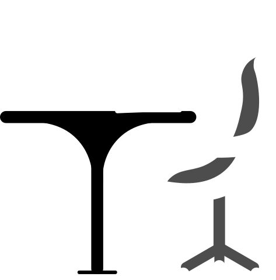
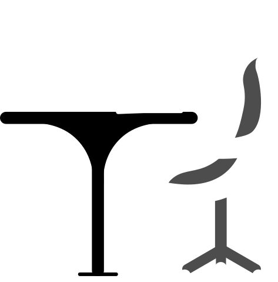

Bruno Latour
französischer Soziologe und Philosoph.
Gustav Roßler (Dr. phil.)
hat in Berlin und Paris Philosophie, Soziologie und Psychologie studiert.
Diese Definition Grenze zwischen Mensch und Objekt, und definiert diese als fließenden Übergang. Jedoch bevorzugt Bruno Latour den Oberbegriff der Quasi-Objekte, bei welchem Hybriden, sowie Menschenwesen aus der Natur und der Gesellschaft gemeint sind. “Diese zirkulieren in Netzen und überqueren die Grenze zwischen Sprache, Sozialem und Realem”, führt Gustav Roßler weiterhin aus. Es sind jene Dinge, durch die das soziale Band geknüpft und stabilisiert wird. (Latour & Roßler, 2008, S. 25)
Prof. Dr. Miriam Landes
ist Professorin für Wirtschaftspsychologie an der Hochschule für angewandtes Management und Geschäftsführerin des Instituts für Unternehmenssteuerung & Veränderungsmanagement (UVM) in München.
Prof. Dr. Eberhard Steiner
ist Professor für Rechnungswesen und Controlling an der Privatuniversität Schloss Seeburg und der Hochschule München und Geschäftsführer des UVM-Instituts in München.
Ralf Wittmann
berät langjährig im Vertrieb und Vertriebsmanagement, im Druck- und Dokumentenmanagement-Umfeld und bei der Einführung von Home Office-Konzepten.
Tatjana Utz
ist Coach für Resilienz und Kreativität, Trainerin für Teams und Führungskräfte, Design Thinking Coach und Künstlerin. Sie leitet das UVM Innovation Lab in München.
Gab uns nicht nur den Einblick in die Vor- und Nachteile des Arbeitsmodells Homeoffice, sondern auch die Methoden die Menschen helfen den Alltag im Homeoffice zu meistern.
Unteranderem die Gefahr der Isolation und Vereinsamung aufgrund einer fehlenden Gruppenzugehörigkeit bestehen. Empfundene Isolation durch fehlende soziale Kontakte im Berufsleben kann Mitarbeitende negativ beeinträchtigen. Dieser Punkt ist vor allem für im Home Office Arbeitende ernst zu nehmen, welche ausschließlich von zu Hause aus arbeiten.
Wie können Kommunikation und Kontakte im Homeoffice aufrecht erhalten werden?
Diese Frage sollte im Team, gemeinsam mit der Führungskraft, geklärt werden. Dabei können folgende Leitfragen zur Orientierung dienen:
• Wie können Sie zwischenmenschliche Beziehungen im Team aufrechterhalten, wenn Sie von zu Hause aus arbeiten?
• Wie kann ein regelmäßiger (Informations-) Austausch untereinander gewährleistet werden?
• Wie kann das informelle Gespräch ersetzt werden?
James Mark Baldwin
Philosoph
Wir erinnern uns niemals an ein Ereignis, noch nehmen wir von ihm in irgendeiner Weise Kenntnis, ohne dass wir uns der Personen oder Dinge erinnern, welche in demselben vorkamen. Diese sind die substantivischen Glieder; sie sind positive Objekte oder objektive Inhalte, welche selbst individuiert und erinnert werden können.
Thomas J. Allen
Professor für Management an der MIT Sloan School of Management und Co-Direktor des MIT Leaders For Manufacturing-Programms.
Es wird eine geringere Kommunikation zwischen den Mitarbeitenden befürchtet. Dieser Befürchtung kann jedoch eine Untersuchung (Allen 1984) entgegengehalten werden. Die sogenannte „Allen Kurve“ besagt, dass die Wahrscheinlichkeit einer regelmäßigen Kommunikation unter Kollegen (in dem untersuchten Fall unter Ingenieuren), die knapp zwei Meter entfernt sind, ungefähr viermal so hoch ist, wie bei Kollegen, welche 18 m voneinander entfernt sitzen. Darüber hinaus sagt sie aus, dass Kollegen aus unterschiedlichen Stockwerken so gut wie kaum miteinander kommunizieren.
Mental Health and the Built Environment = Mental Health and the Built Environment
James Mark Baldwin
Philosoph
Bei der Definition von „Ding“ einigten wir uns darauf, dass damit
nicht nur materielle Objekte gemeint sind und es sich nicht „von der
Gegenständlichkeit des Gegenstandes aus bestimmen. (Heidegger,
1951, S.130).
Lambros Malafouris
Forscher der kognitiven Archäologie
die Grenzen zwischen Geist und Materie nicht fest definiert sind. Es werde in der Psychologie zu oft „von“ oder „über“ Dinge gesprochen und nicht „mit“ Dingen. Die Material Engagement Theory argumentiert, dass das menschliche mentale Innenleben ein Prozess ist, der durch Dinge vermittelt wird und größtenteils aus Dingen besteht. Bloß unserem Verstand Informationen zur Verarbeitung, stattdessen sei es eher ein Ergebnis aus dem Prozess des Zusammenspiels der Umgebungen. Die Dinge mischen sich aktiv in unsere kognitive Welt ein.

 
